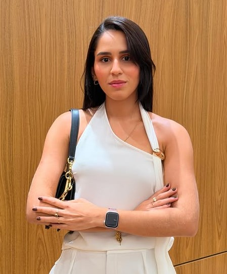

Seu filho autista pode ter direito ao BPC/LOAS do INSS
Faça uma análise inicial e entenda se sua família preenche os requisitos para solicitar o benefício assistencial, mesmo em casos de negativa do INSS ou dúvidas sobre renda familiar.
Atuação previdenciária
Orientação jurídica em benefícios do INSS e direitos assistenciais.
Famílias de autistas
Atendimento voltado a mães, pais e responsáveis por crianças com TEA.
Online e presencial
Atendimento remoto e presencial em Itaberaí/GO.
INSS negou?
A negativa pode ser analisada para entender os próximos passos.
Atendimento online e presencial em Itaberaí/GO
Fale com a Vitória Albino Advocacia e receba uma orientação inicial sobre BPC/LOAS Autista, com atendimento humanizado e linguagem simples.

Dra. Vitória Albino
Orientação jurídica para famílias que buscam entender seus direitos junto ao INSS.
Agendar atendimentoO que é o BPC/LOAS e por que uma criança autista pode ter direito?
O Benefício de Prestação Continuada, conhecido como BPC/LOAS, é um benefício assistencial pago pelo INSS no valor de um salário-mínimo mensal para pessoas com deficiência e idosos que preencham os requisitos legais.
Crianças e adolescentes com Transtorno do Espectro Autista podem se enquadrar como pessoas com deficiência para fins de BPC/LOAS, desde que seja comprovada a condição, a realidade social da família e os demais requisitos exigidos.
A análise envolve documentos médicos, CadÚnico atualizado, renda familiar, gastos com tratamentos, terapias, medicamentos e outros fatores que demonstram a vulnerabilidade da família.
Fazer análise inicialO INSS negou o pedido?
A negativa do INSS não significa, necessariamente, que a família não possui direito. Em muitos casos, é possível revisar a documentação, entender o motivo da negativa e avaliar se há caminho para recurso ou nova solicitação.
- Análise da negativa
- Orientação sobre documentos
- Avaliação do melhor caminho
- Atendimento com linguagem simples
Veja alguns sinais de que sua família deve buscar orientação
Cada caso precisa ser analisado individualmente, mas alguns pontos costumam ser importantes para avaliar a possibilidade do BPC/LOAS.
Diagnóstico de TEA
Criança ou adolescente com diagnóstico de Transtorno do Espectro Autista, com laudo ou acompanhamento médico.
Vulnerabilidade familiar
Família com renda limitada, dificuldades financeiras ou gastos altos com terapias, medicamentos e cuidados.
CadÚnico atualizado
Inscrição no CadÚnico com informações corretas e atualizadas junto ao CRAS do município.
Laudos e relatórios
Documentos médicos, escolares e terapêuticos ajudam a demonstrar a realidade da criança e da família.
Pedido negado
Quem teve o pedido negado pelo INSS pode buscar orientação para entender o motivo e avaliar os próximos passos.
Dúvidas sobre renda
Mesmo quando há dúvidas sobre o limite de renda, gastos essenciais da família podem ser relevantes na análise.
Documentos importantes para solicitar o BPC/LOAS
A organização dos documentos é uma das etapas mais importantes para fortalecer o pedido junto ao INSS.
Laudo médico com CID
Documento médico com diagnóstico de TEA e descrição das limitações e necessidades da criança.
CadÚnico atualizado
Cadastro atualizado no CRAS, com informações corretas sobre a composição e renda familiar.
Documentos pessoais
RG, CPF, certidão de nascimento, comprovante de residência e documentos dos membros da família.
Comprovantes de renda
Contracheques, extratos, declarações ou outros documentos que demonstrem a realidade econômica da família.
Relatórios de terapias
Relatórios de psicólogo, fonoaudiólogo, terapeuta ocupacional, escola ou outros acompanhamentos.
Gastos com saúde
Comprovantes de despesas com medicamentos, consultas, terapias, transporte e cuidados especiais.
Não tem todos os documentos ainda? A análise inicial ajuda a entender o que falta e quais próximos passos podem ser tomados.
Descubra se sua família pode solicitar o BPC/LOAS
Responda algumas perguntas rápidas para iniciar uma conversa mais direcionada com a equipe da Vitória Albino Advocacia.
Vitória Albino Advocacia
A Vitória Albino Advocacia atua com orientação jurídica em benefícios previdenciários e assistenciais, auxiliando famílias que precisam entender seus direitos junto ao INSS.
O atendimento é conduzido com clareza, responsabilidade e linguagem simples, buscando orientar mães, pais e responsáveis sobre os documentos necessários, os requisitos do BPC/LOAS e os caminhos possíveis em cada caso.
Falar com a equipeUm atendimento jurídico pensado para acolher e orientar sua família
A análise do BPC/LOAS exige cuidado com documentos, informações familiares e detalhes que podem fazer diferença no processo.
Atendimento humanizado
Escuta atenta para entender a realidade da criança e da família.
Linguagem simples
Explicações claras, sem juridiquês, para você entender cada etapa.
Orientação documental
Ajuda para compreender quais documentos podem fortalecer o pedido.
Atuação previdenciária
Atuação voltada a benefícios do INSS e direitos assistenciais.
Atendimento online
Você pode iniciar sua análise pelo WhatsApp, sem sair de casa.
Acompanhamento responsável
Cada caso é avaliado individualmente, sem promessa de resultado.
Ainda com dúvidas sobre o BPC/LOAS?
Veja respostas para algumas perguntas comuns de mães, pais e responsáveis.
Entenda se sua família pode solicitar o BPC/LOAS
Fale com a equipe da Vitória Albino Advocacia e receba uma orientação inicial sobre o seu caso.
Fazer análise inicial pelo WhatsAppOu fale diretamente: (62) 9358-1157